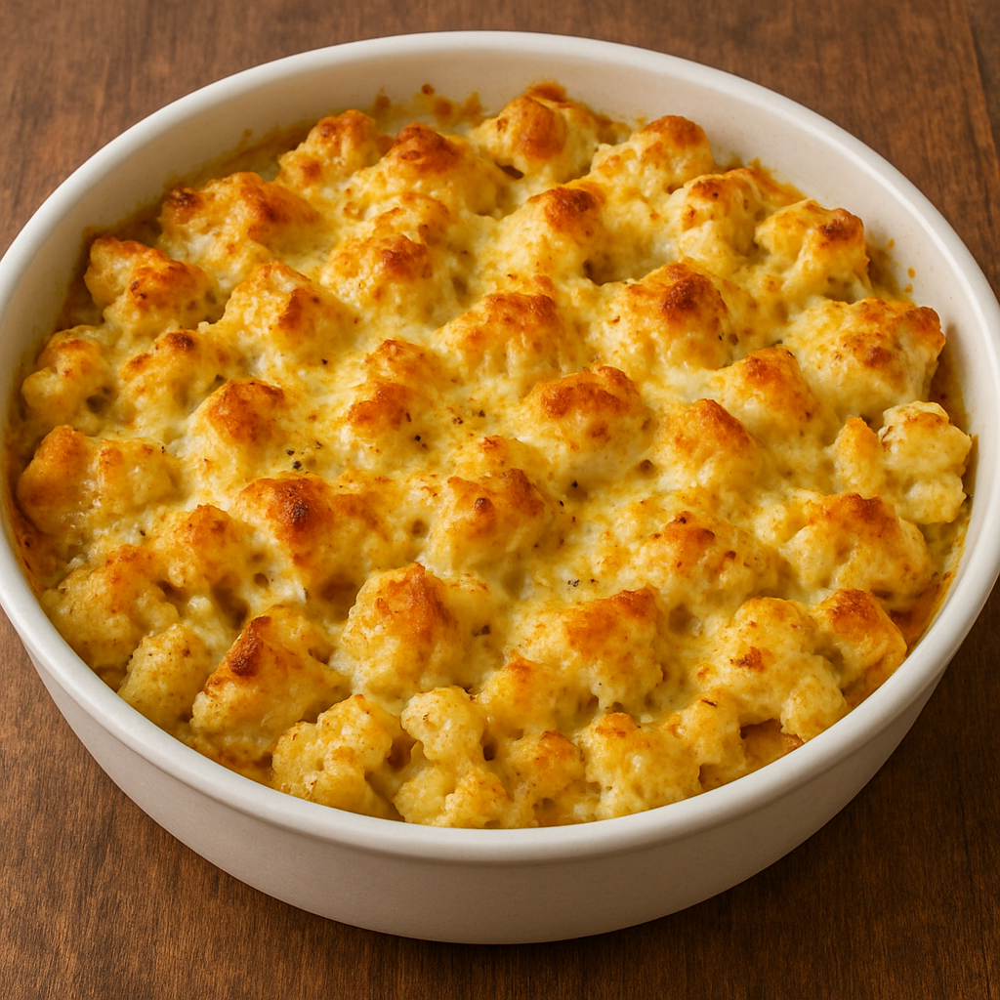

Home
Cheesy Chicken and Cauliflower

A hearty dish featuring tender chicken, roasted cauliflower, and melted cheese.
The recipe starts by roasting cauliflower florets until they become slightly golden and tender. Meanwhile, the chicken is seasoned and cooked in a skillet until well-browned. Once both parts are ready, they are mixed together to form the base of the dish.
To finish, shredded cheese is added on top and melted to create a rich, comforting layer. This dish is quick, nutritious, and pairs well with salads, rice, or even as a standalone low-carb meal.
Ingredients
- Chicken breast, cut into small pieces
- Cauliflower florets
- Shredded cheese (cheddar or mozzarella)
- Olive oil
- Salt
- Black pepper
- Paprika (optional)
Steps
- Roast cauliflower until lightly golden.
- Season and cook the chicken until done.
- Combine chicken and cauliflower in a pan or dish.
- Add shredded cheese on top.
- Let the cheese melt before serving.
Home